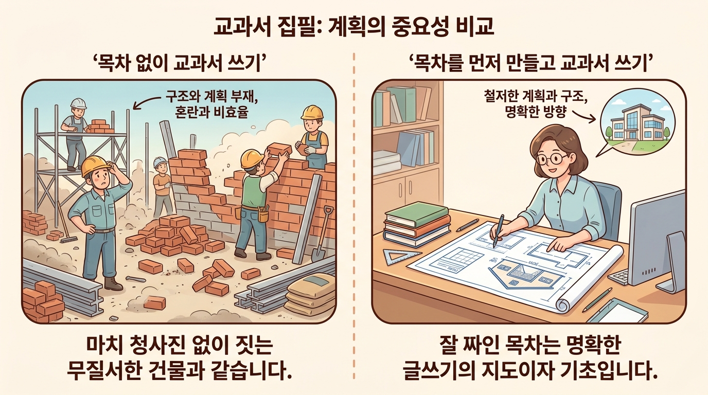
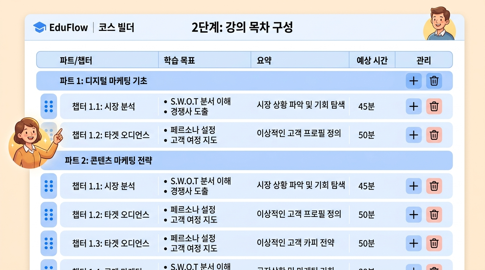
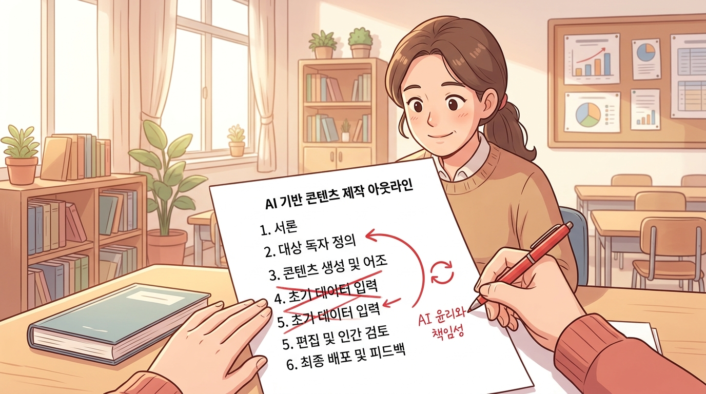

Step 2 · 목차 작성 — AI가 제안하고 교사가 다듬는 구조 설계¶
이 챕터에서 배울 것¶
- AI가 방향성 논의를 바탕으로 Part > Chapter 구조의 목차 초안을 생성하는 과정을 이해합니다.
- 목차 초안에 포함된 학습 목표·개요·예상 소요시간의 역할을 파악하고 점검할 수 있습니다.
- 챕터를 추가·삭제·순서 변경하는 편집 방법을 익힙니다.
- AI가 제안한 목차를 자신의 교육적 판단에 따라 직접 수정하는 실습을 수행합니다.
도입 — 설계도 없이 집을 짓는다면?¶
1장에서 우리는 에듀플로에 로그인하고, AI와 자유롭게 대화하며 교재의 방향을 잡는 과정(Step 1 · 방향성 논의)을 살펴보았습니다. "프로그래밍을 처음 접하는 고등학생 대상", "실습 중심으로, 매 챕터마다 코딩 과제가 있었으면 좋겠어" 같은 이야기를 나누며 교재의 큰 그림을 그린 것이죠.
그런데 생각해 보겠습니다. 방향이 정해졌다고 바로 본문을 쓰기 시작하면 어떻게 될까요?
집을 지을 때 비유하면 명확합니다. "3층짜리, 방 4개, 남향" — 이런 요구사항이 정해졌다고 해서 바로 벽돌을 쌓지는 않습니다. 설계도(도면) 가 먼저 필요합니다. 설계도가 있어야 "거실이 너무 좁지 않은지", "화장실 위치가 적절한지" 미리 확인할 수 있습니다. 설계도 단계에서 방 하나를 옮기는 건 간단하지만, 벽돌을 다 쌓은 뒤에 방을 옮기려면 처음부터 다시 해야 합니다.
교재에서 설계도에 해당하는 것이 바로 목차입니다.

이번 챕터에서는 AI가 방향성 논의를 바탕으로 목차 초안을 만들어주는 과정, 그리고 선생님이 그 초안을 교육적 판단으로 다듬는 과정을 단계별로 살펴보겠습니다.
1. 목차가 왜 중요한가 — 교재의 뼈대¶
목차는 학습 흐름의 지도입니다¶
목차는 단순한 "페이지 안내"가 아닙니다. 목차는 학생이 어떤 순서로, 어떤 깊이로 개념을 만나게 될지 결정하는 학습 흐름의 지도입니다.
좋은 목차는 세 가지 역할을 합니다.
| 역할 | 설명 | 교사에게 주는 이점 |
|---|---|---|
| 🗺️ 전체 조망 | 교재 전체를 한눈에 파악할 수 있습니다 | 빠진 내용이나 중복을 조기에 발견합니다 |
| 🪜 난이도 설계 | 쉬운 것에서 어려운 것으로 자연스럽게 이어집니다 | 학생의 인지 부하를 관리할 수 있습니다 |
| 🔗 연결 고리 | 앞 챕터의 개념이 뒷 챕터로 연결됩니다 | "왜 이걸 배우지?"라는 학생의 의문을 줄입니다 |
그런데 목차를 만드는 일이 왜 어려운가요?¶
경험이 풍부한 선생님도 목차 앞에서 멈추는 경우가 많습니다. 그 이유는 명확합니다.
- 동시에 고려할 것이 너무 많습니다. 교육과정 성취기준, 학생 수준, 시수 배분, 선수학습 관계 등을 한꺼번에 생각해야 합니다.
- "빈 종이" 문제입니다. 아무것도 없는 상태에서 구조를 만드는 일은 누구에게나 힘듭니다.
- 정답이 없습니다. 같은 내용이라도 순서를 바꾸면 전혀 다른 교재가 됩니다.
바로 이 지점에서 AI가 도움을 줄 수 있습니다. AI는 "빈 종이"를 채워주는 초안 생성기 역할을 합니다. 초안이 있으면 선생님은 "이건 좋고, 이건 바꿔야겠다"라고 판단하는 일에 집중할 수 있습니다. 백지에서 만드는 것보다 초안을 다듬는 것이 훨씬 빠르고 정확합니다.
2. 에듀플로의 목차 생성 과정 이해하기¶
점진적 시각화 속 목차의 위치¶
1장에서 소개한 에듀플로의 핵심 철학, 점진적 시각화를 다시 떠올려 봅시다. 목차 작성은 전체 7단계 중 Step 2에 해당합니다.
Step 1에서 안개 속에 있던 아이디어가, Step 2에서 뼈대(골격) 로 모습을 드러냅니다. 아직 살(본문)이 붙지는 않았지만, 교재의 형태가 보이기 시작하는 단계입니다.
방향성 논의 → 목차 생성, 무슨 일이 일어나는가?¶
Step 1에서 선생님이 AI와 나눈 대화는 자동으로 요약되어 "교재 방향 문서(master context)" 로 정리됩니다. Step 2에서 AI는 이 문서를 토대로 목차 초안을 생성합니다.
여기서 주목할 점이 있습니다. AI가 목차를 생성할 때 두 가지 정보원을 사용합니다.
- 교재 방향 문서: 선생님이 대화에서 말한 대상 학생, 교재 목적, 강조점, 참고자료 등
- 선택한 템플릿: Step 0에서 정한 4축 템플릿(HOW·WHAT·WHO·Features)
예를 들어, 같은 "파이썬 입문" 교재라도 워크숍 템플릿을 선택했다면 "도입 → 실습 → 발표 → 피드백" 구조가 각 챕터에 반영됩니다. 교과서 템플릿을 선택했다면 "학습 목표 → 탐구 → 개념 정리 → 확인 문제" 구조가 적용됩니다. 템플릿이 목차의 뼈대 형태를 결정하고, 방향 문서가 구체적인 내용을 채우는 것입니다.
3. 목차 초안 살펴보기 — 무엇이 생성되는가?¶
AI가 생성한 목차 초안에는 단순한 제목 나열이 아니라, 각 챕터마다 세 가지 핵심 정보가 포함됩니다.
목차 초안의 구성 요소¶
| 구성 요소 | 설명 | 왜 필요한가 |
|---|---|---|
| 학습 목표 | 이 챕터를 마치면 학생이 할 수 있는 것 | 챕터의 존재 이유를 명확히 합니다 |
| 개요 | 챕터에서 다룰 핵심 내용 2-3문장 요약 | 전체 흐름에서 이 챕터의 역할을 보여줍니다 |
| 예상 소요시간 | 학습에 걸리는 대략적인 시간 | 수업 시수 배분과 학생 부담을 가늠합니다 |
실제 예시: AI가 생성한 목차 초안¶
아래는 "프로그래밍을 처음 접하는 고등학생 대상, 실습 중심 파이썬 교재"라는 방향 설정으로 AI가 생성한 목차 초안의 일부입니다.
Part 1. 프로그래밍과 친해지기
챕터 학습 목표 개요 소요시간 1장. 컴퓨터와 대화하기 프로그래밍이 무엇인지 설명할 수 있다 프로그래밍의 개념을 일상 속 비유로 이해하고, 파이썬을 선택한 이유를 알아봅니다 30분 2장. 첫 번째 코드 print() 함수로 화면에 글자를 출력할 수 있다 파이썬 실행 환경을 설정하고, "Hello, World!"를 직접 출력합니다 45분 3장. 데이터를 담는 상자 변수를 만들고 값을 저장할 수 있다 변수의 개념과 이름 짓기 규칙을 배우고, 여러 자료형을 실습합니다 50분 Part 2. 프로그램에 판단력 넣기
챕터 학습 목표 개요 소요시간 4장. 참과 거짓 비교 연산자와 논리 연산자를 사용할 수 있다 조건을 만드는 방법을 배우고, True/False 개념을 실습합니다 40분 5장. 갈림길 — if문 if-elif-else로 조건에 따라 다른 동작을 실행할 수 있다 일상의 선택 상황을 코드로 표현하며 조건문을 익힙니다 50분 6장. 반복의 힘 — for와 while 반복문으로 같은 작업을 여러 번 수행할 수 있다 수동 반복의 불편함을 체험한 뒤 반복문의 가치를 발견합니다 60분
이 초안을 보면, 선생님은 바로 "이건 괜찮고, 이건 아니다"라는 판단을 내릴 수 있습니다. 백지에서 시작하는 것과는 완전히 다른 경험입니다.
4. 목차 편집하기 — 추가, 삭제, 순서 변경¶
AI가 제안한 목차는 말 그대로 초안입니다. 교육과정을 알고, 학생을 직접 만나는 것은 선생님이기 때문에, 최종 판단은 항상 선생님의 몫입니다. 에듀플로에서는 세 가지 편집 작업을 자유롭게 할 수 있습니다.
4-1. 챕터 추가¶
AI가 빠뜨린 내용이 있을 때, 원하는 위치에 챕터를 추가합니다.
예시 상황: AI가 생성한 목차에 "디버깅(오류 찾기)" 챕터가 없습니다. 하지만 선생님의 경험상, 학생들은 3장(변수) 이후부터 오류 메시지를 자주 만나게 됩니다. 이 시점에 디버깅 챕터가 필요합니다.
조치: 3장과 4장 사이에 "3.5장. 오류는 친구다 — 디버깅 첫걸음"을 추가합니다.
4-2. 챕터 삭제¶
불필요하거나 범위를 벗어나는 챕터를 제거합니다.
예시 상황: AI가 "객체지향 프로그래밍" 챕터를 마지막에 넣었습니다. 하지만 이 교재는 "입문" 수준이고, 한 학기 분량입니다. 객체지향까지 다루면 학생들에게 과부하가 걸립니다.
조치: 해당 챕터를 삭제합니다. (나중에 "심화편" 교재에서 다룰 수 있습니다.)
4-3. 순서 변경¶
개념 간 선수학습 관계나 학생의 동기 유발을 고려해 순서를 바꿉니다.
예시 상황: AI가 "함수" 챕터를 "리스트" 앞에 배치했습니다. 하지만 선생님의 경험상, 리스트를 먼저 다루면 함수의 필요성("이 리스트 처리 코드를 매번 반복해서 쓰기 싫은데…")을 학생이 자연스럽게 느낍니다.
조치: "리스트" → "함수" 순서로 변경합니다.
편집 판단 기준 체크리스트¶
챕터를 추가·삭제·이동할 때, 다음 네 가지 질문을 스스로에게 던져 보세요.
5. 교사의 교육적 판단이 들어가는 지점¶
AI는 일반적인 교육 원리에 따라 목차를 구성합니다. 하지만 AI가 알 수 없는 것들이 있습니다. 바로 선생님의 교실에서만 통하는 맥락입니다.
AI가 잘하는 것 vs. 교사만 할 수 있는 것¶
| AI가 잘하는 것 | 교사만 할 수 있는 것 |
|---|---|
| 논리적 순서로 개념 배열 | "우리 반 학생들은 이 부분에서 특히 헷갈려한다" |
| 교육과정 표준에 맞는 구조 제안 | "중간고사 범위가 여기까지니까 이 챕터는 앞으로 당겨야 한다" |
| 각 챕터에 적절한 소요시간 추정 | "체육대회 주간이라 그 주에는 가벼운 챕터를 배치하자" |
| 선수학습 관계 파악 | "작년에 이 순서로 가르쳤더니 학생 반응이 좋았다" |
이런 판단은 오직 교실 현장에 있는 선생님만 할 수 있습니다. 에듀플로의 철학인 "교사는 창작자, AI는 도구" 가 가장 뚜렷하게 드러나는 순간이 바로 목차 편집 단계입니다.
실전 팁: 목차를 점검하는 세 가지 관점¶
-
학생 관점에서 읽어보기: 목차를 위에서 아래로 천천히 읽으며 "내가 학생이라면 이 흐름이 자연스러운가?"를 생각해 봅니다.
-
시수 역산하기: 총 수업 시수에서 평가·활동 시간을 빼고, 남은 시간을 챕터 수로 나눕니다. 한 챕터에 1-2차시가 적당한지 확인합니다.
-
동료 교사에게 보여주기: 목차만 보고도 "이 교재가 뭘 가르치려는 건지" 파악할 수 있어야 좋은 목차입니다.
6. 템플릿에 따라 달라지는 목차 구조¶
Step 0에서 선택한 템플릿(HOW 축)에 따라, AI가 생성하는 목차의 챕터 내부 구조가 달라집니다. 같은 주제라도 교수법에 따라 교재의 뼈대가 달라지는 것입니다.
아래 예시는 "파이썬 변수" 챕터 하나가 템플릿에 따라 어떻게 다르게 구성되는지 보여줍니다.
| 템플릿 | 챕터 내부 구조 | 특징 |
|---|---|---|
| 📖 교과서 | 학습 목표 → 탐구 활동 → 개념 정리 → 확인 문제 | 개념 이해에 초점 |
| 🔧 워크숍 | 도입 → 실습(코딩) → 발표 → 피드백 | 실습 70%, 이론 30% |
| 📚 스토리텔링 | 도입 이야기 → 개념 발견 → 적용 → 마무리 | 캐릭터가 문제를 해결하며 배움 |
| 🧭 자기주도 | 사전 점검 → 학습 → 자기 평가 → 심화 | 학생이 자기 속도로 진행 |
선생님이 Step 0에서 "워크숍" 템플릿을 선택했다면, AI는 모든 챕터에 실습 섹션을 포함한 목차를 생성합니다. 만약 목차를 보다가 "이 챕터는 개념 설명이 좀 더 필요하겠다" 싶으면, 해당 챕터만 교과서 스타일로 수정할 수도 있습니다. 전체 틀은 유지하면서 부분적으로 조정하는 것이 가능합니다.

7. 실습 — AI 목차를 나의 교육적 판단으로 다듬기¶
이제 직접 해볼 차례입니다. 아래에 AI가 생성한 목차 초안이 있습니다. 선생님이 이 교재의 저자라고 생각하고, 교육적 판단에 따라 수정해 보세요.
실습 상황 설정¶
- 교재 주제: 중학교 2학년 과학 — "우리 몸의 소화와 순환"
- 대상 학생: 과학에 흥미가 낮은 편, 실험을 좋아함
- 수업 시수: 총 8차시 (1차시 = 45분)
- 템플릿: 교과서 (탐구 학습)
AI가 생성한 목차 초안¶
Part 1. 음식의 여행
챕터 학습 목표 개요 소요시간 1장. 왜 먹어야 할까? 영양소의 종류와 역할을 설명할 수 있다 6대 영양소를 소개하고, 각 영양소가 우리 몸에서 하는 일을 알아봅니다 45분 2장. 입에서 시작되는 변화 소화의 정의를 말할 수 있다 기계적 소화와 화학적 소화의 차이를 입속 실험으로 체험합니다 45분 3장. 위와 소장의 역할 소화 기관별 기능을 구분할 수 있다 위의 산성 환경과 소장의 흡수 기능을 모형 실험으로 이해합니다 90분 4장. 영양소의 분자 구조 탄수화물, 단백질, 지방의 화학식을 쓸 수 있다 영양소의 분자 수준 구조를 학습합니다 45분 Part 2. 혈액의 고속도로
챕터 학습 목표 개요 소요시간 5장. 심장의 구조 심장의 4개 방과 혈관을 설명할 수 있다 심장 모형을 관찰하고 혈액의 이동 경로를 추적합니다 45분 6장. 혈액의 구성 혈액의 구성 성분과 기능을 설명할 수 있다 적혈구, 백혈구, 혈소판, 혈장의 역할을 알아봅니다 45분 7장. 폐순환과 체순환 폐순환과 체순환의 경로를 구분할 수 있다 산소와 이산화탄소의 교환 과정을 추적합니다 45분 8장. 소화와 순환의 통합 소화계와 순환계의 연결을 설명할 수 있다 영양소가 소장에서 흡수되어 혈액을 통해 온몸으로 전달되는 과정을 종합합니다 45분
실습 과제¶
아래 질문에 답하며 목차를 수정해 보세요. 노트나 빈 종이에 직접 작성해 보시는 것을 권장합니다.
과제 1 — 삭제 판단
4장 "영양소의 분자 구조"를 살펴보세요. 중학교 2학년 학생에게 탄수화물, 단백질, 지방의 화학식을 가르치는 것이 이 교재의 범위에 적절한가요? 적절하지 않다면, 이 챕터를 삭제하거나 내용을 어떻게 바꾸겠습니까?
과제 2 — 추가 판단
실습 상황에서 "학생들이 실험을 좋아한다"고 했습니다. 현재 목차에 실험이 충분히 포함되어 있나요? 부족하다면, 어디에 어떤 실험 활동 챕터를 추가하겠습니까?
과제 3 — 순서 변경 판단
3장의 소요시간이 90분(2차시)입니다. 총 8차시 중 2차시를 하나의 챕터에 배분하는 것이 적절한가요? 만약 나누어야 한다면, 어떻게 분할하겠습니까?
과제 4 — 종합 수정
위의 판단을 모두 반영하여, 수정된 최종 목차를 직접 작성해 보세요.
실습 힌트¶
정답은 없습니다. 다만, 아래 방향을 참고하실 수 있습니다.
- 4장은 중학교 수준에서 분자 구조까지 다루기엔 과합니다. "영양소가 작은 조각으로 분해된다" 정도의 개념으로 축소하거나, 2장에 통합할 수 있습니다.
- 3장은 "위"와 "소장"을 각각 별도 챕터로 나누면, 각 차시에서 하나의 실험에 집중할 수 있습니다.
- 삭제·분할로 확보된 차시를 활용해 "간단한 소화 실험 프로젝트" 챕터를 추가하는 것도 좋은 선택입니다.

정리¶
이번 챕터에서 배운 핵심을 세 문장으로 정리합니다.
- 목차는 교재의 설계도입니다. 본문을 쓰기 전에 전체 구조를 잡아야 방향 수정이 쉽습니다.
- AI는 "빈 종이" 문제를 해결합니다. 방향성 논의와 템플릿을 토대로 Part > Chapter 구조의 초안을 생성하고, 각 챕터에 학습 목표·개요·소요시간을 포함합니다.
- 최종 판단은 교사의 몫입니다. AI가 알 수 없는 교실 맥락 — 학생 수준, 시수 제약, 시험 범위, 지난 수업 경험 — 을 반영하여 챕터를 추가·삭제·순서 변경합니다.
다음 챕터 미리보기¶
목차가 완성되었다고 바로 본문 작성으로 넘어가지 않습니다. 다음 단계인 Step 3 · 피드백 & 확정에서는 AI와 대화하며 각 챕터의 세부 방향을 다듬습니다. "3장에서 이런 실험 데이터를 활용하고 싶다", "5장의 난이도를 조금 낮춰달라"와 같은 구체적인 피드백을 주고받으며, 목차를 최종 확정하는 과정을 살펴보겠습니다.
확인 문제¶
스스로 이해도를 점검해 보세요.
문제 1. AI가 목차를 생성할 때 활용하는 두 가지 정보원은 무엇인가요?
정답 확인
① Step 1에서 생성된 **교재 방향 문서(master context)** 와 ② Step 0에서 선택한 **4축 템플릿(HOW·WHAT·WHO·Features)** 입니다.문제 2. AI가 생성한 목차 초안의 각 챕터에 포함되는 세 가지 정보는 무엇인가요?
정답 확인
**학습 목표**, **개요**, **예상 소요시간** — 이 세 가지가 각 챕터마다 포함됩니다.문제 3. 목차 편집에서 "순서 변경"이 필요한 상황의 예시를 하나 들어 보세요.
정답 예시
AI가 "함수" 챕터를 "리스트" 앞에 배치했지만, 리스트를 먼저 다루면 학생이 함수의 필요성을 자연스럽게 느낄 수 있으므로 순서를 바꾸는 경우입니다. 또는 중간고사 범위에 맞춰 특정 챕터를 앞으로 당기는 경우도 해당됩니다.문제 4. "교사는 창작자, AI는 도구"라는 원칙이 목차 편집 단계에서 어떻게 드러나는지 한 문장으로 설명해 보세요.
정답 예시
AI가 논리적 구조를 제안하지만, 학생 수준·시수·교실 맥락 등 AI가 알 수 없는 요소를 반영하여 최종 목차를 확정하는 것은 교사입니다.문제 5. 선택한 템플릿(HOW 축)이 "워크숍"일 때, 각 챕터의 내부 구조는 어떤 순서로 구성되나요?